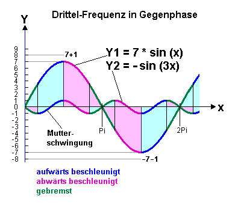
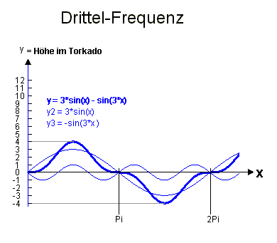

Was ist eine Sonne ?
Viktor Schaubergers 'eigenartige' Behauptung ( /1/ Seite 117), die Sonne sei eiskalt und absolut dunkel, erscheint jetzt in einem anderen Licht. Er hat das nicht weiter kommentiert, aber Coats hat herausgefunden, daß man die Sterne und damit die Sonne im absoluten kosmischen Vakuum nicht mehr sieht, erst ab einem Minimum an Atmosphäre. Beim Flug zum Mond kamen die Sterne erst in Mondnähe wieder, und immerhin ist auch die Sonne ein Stern. Das Licht wird erst sichtbar in Wechselwirkung mit Materie. Wenn man ganz weit draußen ist, ist alles dunkel, auch die Erde. Die Energie, die hier auf der Erde ankommt, wird erst zur Wärme im Kreuzprodukt mit den Erdfeldern - die Schwingungen, die von jedem Atom ausgehen.
Jetzt das Ganze in die NEUE PHYSIK übersetzt: Da das Proton nur das magnetische Nebenprodukt (Ätherverdünnung) der Elektronenbewegung ist, also ein (geordnetes) Energiemangelgebiet des Äthers, muß man es auch als superkalt bezeichnen. Ihm wurde die Bewegung entzogen, die nun in der Elektronenbahn steckt. Die Sonne ist möglicherweise das Proton des Sonnensystems. Überall, auch zwischen den Planeten, wäre es dann wärmer als in der Sonne. Denn die Sonne als ganzheitlich bewegtes Äther-Mangelgebiet ist extrem dünner geordneter Äther, in dem sich hier und da auch mal Wasserstoff bildet, der dann sofort vom Sonnen-Riesenproton abgestoßen wird und als Protonenwind bei uns ankommt. Die Licht-Strahlen, die sie uns schickt, sind Sogstrahlen. Sie zieht die Elektronenenergie der Planeten zu sich an. Sie saugt die Erde energetisch aus. Nun ist es aber nicht so, daß diese Energie ohne die Sonne uns zur Verfügung stünde. Sie ist in den Torkados der Atome und ihrer 2^N-vergrößerten Strukturen gefangen. Die Sogstrahlen brechen die Torkados auf und die Energie wird als Wärme und Licht frei. Im rotierenden Festkörper oder in der Hallplatte brechen die Torkados ähnlich auf durch die Drehvektoren W oder H. Es entsteht dabei die Trägheitskraft bzw. der elektrischer Widerstand. Was ist denn ein H-Feld ? Die Äther-Unterdruckzone ! Die Sonne ist nur ein starkes H-Feld, weil sie im Zentruum der Planetenbewegung steht.
DIE PLANETENBEWEGUNG ERZEUGT DIE SONNE.
Und alle H-Felder (auch Rotationsfelder) geben Sogstrahlen ab, die geschlossene Torkados stören und schließlich aufbrechen, wenn sie auf welche treffen. Um so wichtiger ist die Pumpfunktion der Torkados. Am Beispiel der Sonne sehen wir, daß die Atome sicherlich auch jede Menge innerer Verluste haben. Ihr Proton verhält sich wie die Sonne und hat das Bestreben, Wärme anzuziehen, also die geordneten Bahnen der Elektronen zu verwirbeln. Jedes kalte Objekt hat dieses Bestreben, so kennen wir es in der Thermodynamik. Diese Sogstrahlen sind also nichts Absonderliches. Und es kann sogar sein, daß der Sonnen-Protonenwind allein das Licht transportiert, weil ein H-Atom als Proton ein nach außen gerichtetes starkes H-Feld hat.
Gravitation und Fran de Aquino
Die
Gravitonen-Teilchentheorien hinken alle in dem Sinne, daß sie ein von E und H
entkoppeltes Teilchen postulieren, das für die Gravitation zuständig ist.
Wenn die Erde ein bewegter geladener Körper ist, dann treten auch große elektrische
(E) und magnetische Felder (H) auf, viel größer als wir messen - wir können nur
die Schwankungen messen - die 'Haupt-Ladung' sitzt schon in der scheinbar neutralen
Masse. Der Pointingvektor P=ExH ist das Zauberwort für Energiefluß. Multipliziert
mit Ladung, ist es Kraft. Und wenn E und/oder H schwanken, wird natürlich auch
P schwanken, bis hin zur Antigravitation. Ich erinnere an den schwebenden Frosch
im Magnetfeld.
Unserer Physik fehlt das Wissen über den Ladungsnullpunkt.
Wir wissen zu wenig über die Qualität des uns umgebenden Äthers. ER ist es, der
die Planeten aufeinander drückt, wie die Luftblasen im Öl. Das Atom ist fast leer,
leerer als der Äther ohne Materie. Das Wasserstoff-Elektron ist hochgradig geordneter
Äther - eine starke dynamisch-bewegte Verdichtung in Torkadoform, und ein leergefegter
InnenRaum der Rest: das Proton, in den ständig alles hineinstürzen will, was nicht
ebenso kalt und ebenso leer ist. Das ist doch ganz normal für Unterdruck, nur
ist hier der Unterdruck im Äther gemeint. Mit sehr viel Elektronenladung (elektrischer
Strom, aktiv schwingende Ätherwirbel) läßt sich dieses 'Stürzenwollen' aufhalten.
Man muß nur noch den Vektor P=ExH ganz genau gegen die erdspezifischen Größen
von ExH richten, zweifellos durch ELFwellen mit Schwingungszeiten 12 oder 12/2
oder 12/3 oder 12/4 Stunden oder den Mondmodulationen (Schumannwelle).
Das
hat Prof. Fran de Aquino gemacht: http://www.aladin24.de/htm/aquino.htm
Er ist inzwischen umstritten, weil er wohl nicht alles verraten hat, was man für
den Nachbau braucht. Es ist jedenfalls wohl noch nicht gelungen, die angegebenen
Ströme durch das Eisenpulver zu jagen bzw. die vorgegebenen Permeabilitäten zu
erreichen. Ich glaube aber doch, daß was dran ist, weil seine benutzten ELF-Frequenzen
(die viel kleineren als 60 Hz) erd- und erddrehungsresonant sind.
Gravitationswellen
Für
mich sind G-Wellen nur große Fraktale der eigentlichen Gravitation, und da diese
eine Summenschwingung hat, die nicht Null ist (das, was als Kraft auf der Erde
nach unten zeigt), kann sie nur asymmetrisch sein. Jedes Atom gibt diese Schwingung
ab, genaugenommen sogar jedes Hüllen-Elektron. Es ist im Grunde die Fortsetzung
des Soges (in den Außenraum), dem das Elektron unterworfen ist beim Eintauchen
in den Südpol. Die dazu gegenteilige Druckwelle beim Herauskommen aus dem Nordpol
hat eine andere Größe, weil der Nordpol eine andere Größe hat. Die Hüllen-Elektronen
eines Elementes 'bauen' so zusammen eine asymmetrische Welle der Länge L=Z*Ce
auf, die sich über Skalierungen wie 2^N, 3^M, 5^L, exp(K) wiedertreffen und dort
Fronten bilden (GlobalScaling, UniversalScaling).
Warum es aufgrund des nachgewiesenen
Zusammenhanges L=Z*Ce so aussieht, als ob alle Elektronen gleichzeitig in den
Südpol fliegen und gleichzeitig aus dem Nordpol auftauchen, daran rätsele ich
auch noch herum (das Thema "Zeit" wurde noch nicht bearbeitet.). Sonst
könnten sich die Anteile vom Südpol nicht sauber bis zum Maximum addieren, weil
zwischendurch andere Elektronen am Nordpol die Einzel-Gegenwelle dazwischenstellen
müßten.
Ideale Energie-Übergabe bei Faktor Drei
6
Halbwellen der G-Schwingung im Verlauf einer Schwungmassen-Schleife:
außen
(Abwärtsbewegung): runter+hoch(=Anhalten)+runter = 1 Überschuß 'runter'
innen
(Aufwärtsbewegung): hoch+runter(=Anhalten)+hoch = 1 Überschuß 'hoch'
Summenschwingung = A*sin(wt) - sin(3wt), mit 2 < A < 10, A ganz

Vier von sechs
halben Mutterschwingungen werden auf diese Weise pro Hauptschwingung eingesammelt.
Wenn man an die Y-Achse ein Z schreiben würde, hätte man die Schwingung eines
Torkados vor sich, betrachtet in vertikaler Richtung (ohne Betrachtung des Radius,
denn der ist in jeder Abwärts-Phase größer als in der Aufwärts-Phase).
Hier
mit Amplitudenfaktor -3 bleibt die Summe bei Pi und 2Pi fast auf einer Höhe
stehen:

Denkbar ist
auch eine anderes ungerades Frequenzverhältnis, obwohl der Effekt dadurch
nicht besser wird. Der nutzbare Rest wird nicht größer. Damit ist klar,
daß jeglicher Faktor 3 bei Resonanzen mit genau diesem Mechanismus zu tun haben
kann.
Das bedeutet, daß eine Kohlenstoffresonanz (Z=6=2*3) ganz automatisch
Energie aus einer Wasserstoff-Schwingung (Z=1) oder einer Sauerstoff-Schwingung
(Z=2^3) ziehen kann. Das ist der wahre Grund für die ganze Kohlenwasserstoff-
und Sauerstoff-Chemie in organischer Materie.

Bei der (originalen) Seike-Schleife sind die Elektronen in den vorwärtsführenden Verbindungsstücken gerade in der Kernphase, also dem Mittelschlauch ihres eigenen 2^N-Torkado, und wenn sie den großen Bogen der Schleife durchziehen, bilden sie die Atomhülle. In einer solchen Schleife sind sie auf dieser Größenebene "frei", sie haben keine Bewegungsbeschränkungen (=elektrischer Widerstand) und müßten Eigenschaften in Richtung Supraleitung zeigen, wenn die Schleifengröße eine 2^N-Vergrößerung von ihrer Material-Resonanzlänge ist, die wiederum dreimal so groß wie die Wellenlänge des Mutterfeldes sein sollte. Als Metall käme Molybdän Z=14*3 =42 infrage (am besten Isotop m=98=2*42+14, das ist auch das häufigste), evtl. Rhodium Z=30*3/2=45 wegen SiO2=30.
Es könnte sehr gut sein, daß es auf das Anhalten ankommt. Auch Blitze (Hasenpusch:"Hochspannungstechnik", S.189) gehen stufenweise ruckartig runter oder rauf. Die Pausen dauern von 15 bis zu 100 Mikrosekunden. Vielleicht haben die Barkhausensprünge denselben Hintergrund ? Das Material könnte sofort auf die Feldänderung reagieren, aber das dynamische G-Feld hält sie rhythmisch zunächst fest.
Hier diverse Applets:
http://www.aladin24.de/Bild/app1/DrittelFrequenz11.htm
http://www.aladin24.de/Bild/app1/DrittelFrequenz9.htm
http://www.aladin24.de/Bild/app1/DrittelFrequenz7.htm
http://www.aladin24.de/Bild/app1/DrittelFrequenz5.htm
http://www.aladin24.de/Bild/app1/DrittelFrequenz4.htm
http://www.aladin24.de/Bild/app1/DrittelFrequenz3.htm
http://www.aladin24.de/Bild/app1/DrittelFrequenz2.htm
http://www.aladin24.de/Bild/app1/DrittelFrequenz1.htm
Dieser Text von Gabi Müller steht auf: www.torkado.de/torkado4.htm
Meine Email-Adresse: info@aladin24.de